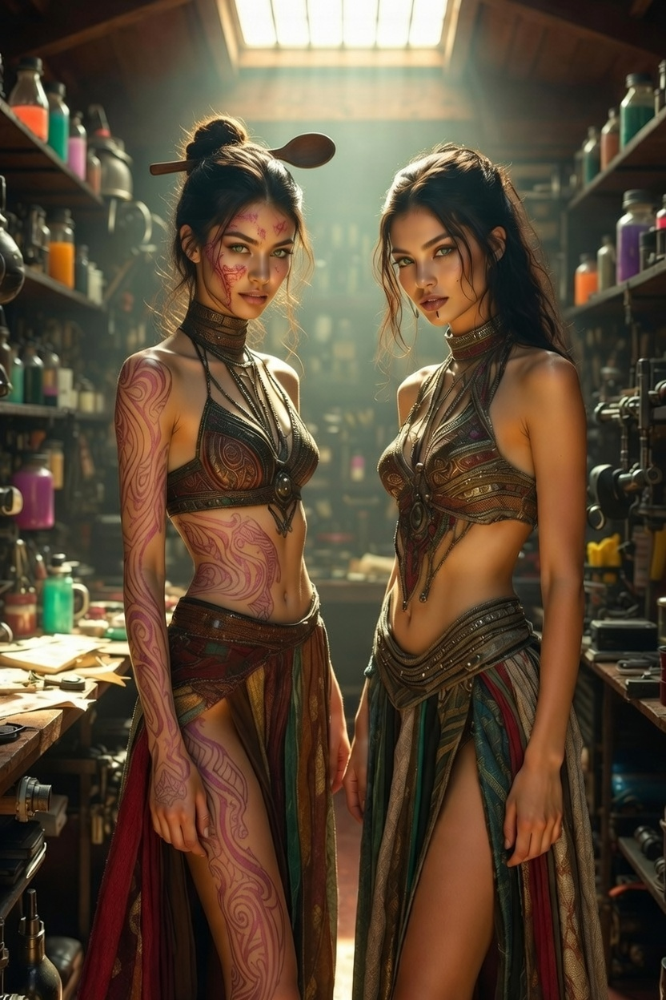

I've always been drawn to the stubborn ones.

In Norwegian folklore, there's a tale about a princess named Tatterhood. She rides a goat. She carries a wooden spoon. She's ugly, loud, and utterly unbothered by what anyone thinks of her. While her beautiful sister weeps and waits to be rescued, Tatterhood charges into danger, beats back trolls, and generally refuses to behave like a princess is supposed to. She's not the prize. She's the hero. And she's weird.
The first time I read her story, I felt something click into place. Here was a folk hero who didn't need a makeover or a lesson in humility. She just needed a stage big enough to hold her.
So I started wondering: what would Tatterhood look like in 21st-century America? And more importantly — where would she go? I myself had never heard of the story and was surprised by what a good set of bones the story had underneath it.
From Tatterhood to Tatwitt
The name "Tatterhood" was an obstacle. I couldn't use it. So I thought her name would be Talia, like Emily did. Then I got the idea of the full body birth marks that looked like tattoos and realized "Tat" was part of Tatterhood and tattoo. Then I thought she would be smart so "wit." I put them together and came up with Tatwitt.
Which took a bit of getting used to, but it sounded better than Tatterhood. It sounded wrong in the best way — grating, ridiculous, unforgettable. Like someone who'd get kicked out of a casino for yelling at a slot machine.

Tatwitt kept the goat (it's a beat-up motorcycle named Goat, because some things are sacred). She kept the spoon (reimagined as something else — maybe you'll see). But most importantly, she kept the attitude: the refusal to be pretty, the refusal to be quiet, the refusal to let the world tell her what kind of story she was in.
Why Las Vegas?
I know. A Norwegian folktale belongs in fjords and forests, in cold mist and darker waters. That's the obvious choice. But folktales were never about the obvious. They were about edges — places where civilization frays and something older seeps through.
Las Vegas is an edge. It's a city built on luck and desperation, where the desert reclaims what isn't fiercely defended. The neon is bright because the dark is so close. That tension — glitter against grit, wealth against ruin, performance against truth — felt exactly right for a story about a woman who refuses to perform.

And the Southwest itself? It's full of Tatterhoods. People who came here running from something, or toward something, or just because they couldn't fit anywhere else. The desert doesn't ask you to be beautiful. It asks you to endure.
What This Story Is Actually About
At its heart, this isn't a story about Norway or Vegas. It's about the women we don't write fairy tales for — the loud ones, the strange ones, the ones who make people uncomfortable. The ones who don't get chosen. Tatterhood was always that woman. Tatwitt is just her latest incarnation.
I wrote this because I needed to believe that the stubborn ones still get to be the hero. That you can ride your goat through the casino, spoon in hand, and win on your own ridiculous terms.
I hope you'll come meet her.